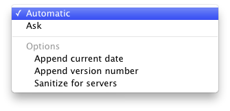

This option controls the names of the output disk image or archive and also the
mounted disk image volume.

- Automatic
- DropDMG chooses the filename and volume name based on the name of the
source.
- Ask
DropDMG asks you to enter the name of the image file it will create and the
name of the volume that will appear on the desktop when you mount the image.
DropDMG will automatically add the proper filename extension to the
filename. It may also truncate the names you enter if they would be too long
for the Mac’s volume and filename limits.
Note: The volume name is not settable when creating a device image,
although you can use the CreateDeviceImages esoteric preference to
tell DropDMG not to create device images.
Three additional options are available:
- Append current date
- Add the current date (in YYYY-MM-DD format) to the end of the filename
and volume name. This option is ignored when creating a disk image by
converting.
- Append version number
- When imaging an application or installer package (or a folder containing an
application or package), add its version number to the end of the filename
and volume name. This option is ignored when creating a disk image by
converting.
- Sanitize for servers
- Process the name of the output file so that it does not contain any spaces,
accented or foreign characters, or certain punctuation marks. This makes it
possible to upload it to a Web or FTP server and then access it using a URL
that contains no percent escape sequences.